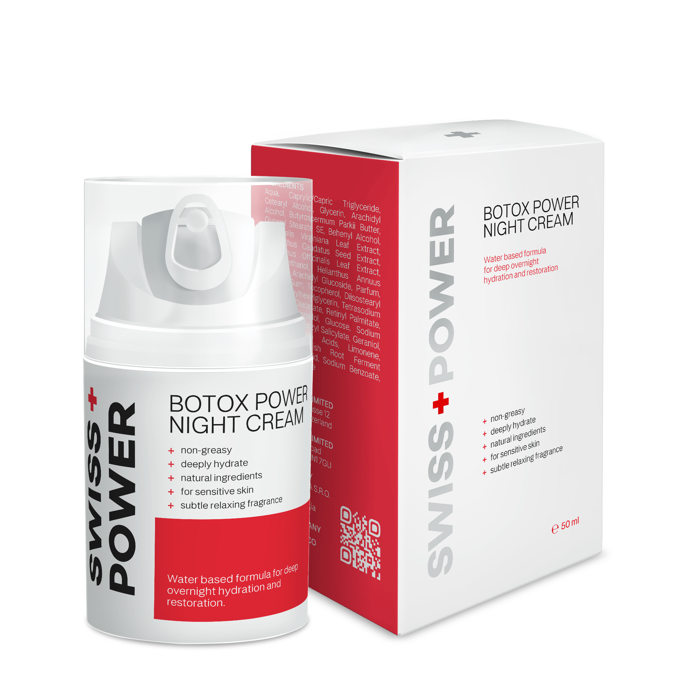
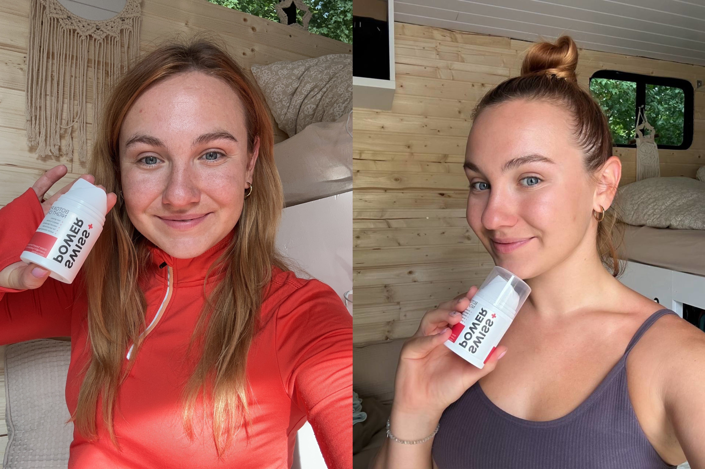
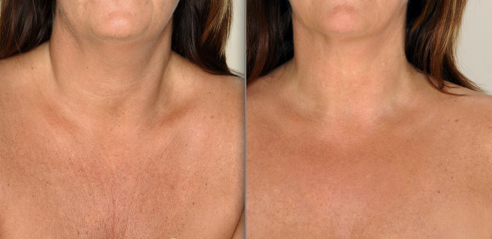

Advertorial
In the pursuit of perfect skin, many fall into the trap of over-moisturizing with artificial products. The irony is, these very creams designed to hydrate often leave our skin in a worse state over time.
Your skin is the largest organ of your body, and also one of the most deceptively complex.
Every day, people are led to believe that in order to keep their skin healthy, they need to rely on a steady stream of products to do so. However, this may not be the best choice in most cases.
Picture this: dull, lifeless skin that no longer knows how to moisturize itself. Endless applications of creams that promise hydration but only lead to dependency. The more you use, the more your skin seems to crave.
It's not just about dryness – it's about a deeper issue. Typical moisturizers disrupt your skin's natural ability to self-moisturize, creating a cycle of dependency that ages your skin prematurely.
More about that later...
In the bustling world of skincare, a clandestine plot unfolds within the corridors of a powerful corporation. At the helm, a group of cunning executives devises a master plan to keep consumers perpetually hooked on moisturizers – the golden goose of their beauty empire.
A marketing team, armed with persuasive strategies, introduces the allure of eternal youth and radiant skin through moisturizers. The promise of hydration becomes a siren song, drawing consumers into a never-ending cycle of dependency.
As consumers succumb to the initial charm, they unwittingly enter a cycle meticulously designed by the corporation. Each application of moisturizer seems like a necessity, creating a dependency that ensures consistent revenue flow for the company.
The corporations, owning multiple skincare brands (did you know that 90% of skincare brands are owned by one of 3 cosmetics giants), strategically markets a range of moisturizers. From creams to lotions, each product claims to offer a unique solution, fostering a belief that more is better. Consumers, ensnared by the illusion of choice, fall deeper into the moisturizing labyrinth.
Behind the scenes, scientists employed by the corporation carefully formulate products that, instead of addressing the root cause, perpetuate the need for continuous moisturizing. Ingredients are chosen not for long-term benefits but for immediate gratification, ensuring a steady stream of sales.
The cycle continues…
Your skin knows when it requires hydration, and under normal circumstances, it will produce sebum as needed.
Unfortunately, chronic use of moisturizing products disrupts this process.
When the skin senses that it is already being moisturized, it will simply stop performing its job of making and secreting sebum.
In between applications of your moisturizer, or if you stop using it, the skin lacks critical protection and is extremely vulnerable to drying out.
This often leads people to believe that they just have chronically dry skin and that they have no choice but to rely on skin products to remedy the issue.
Many experts call this phenomenon “lotion dependency”.
Perhaps you’ve read the label, but shrugged off all those unpronounceable ingredients as being necessary?
What many people don’t realize is that the ingredients in most commercial products actually promote dry skin. Substances like alcohols, acids, preservatives, fragrances and dyes can act like solvents, which strip oils from your skin.
To make matters worse, glycerin, which is supposed to help your skin, is only effective when humidity levels are above 70 percent.
If you live in a dry or cold climate, or if you spend most of your time indoors, it’s unlikely that the ambient humidity ever becomes that high.
Introducing SWISS+POWER Night Cream – a game-changer in the world of skincare. This revolutionary formula doesn't just hydrate; it restores your skin's innate ability to self-moisturize.
"It took about 2 years to finally perfect our Restoring SWISS+POWER Night cream, but when we finally got it right, as they say, the rest is history."
Unlocking the Science Behind Radiant Skin developed by ingredients that have been proved to have long-term benefit in skin self-moisturizing ability restoration.
The secret to restoring your skin's self-moisturizing ability. Packed with essential emollients and nutrients, Shea Butter doesn't just hydrate; it goes beyond, improving the skin's moisture barrier. Your skin becomes a reservoir of natural hydration, breaking free from the shackles of artificial moisturizers.
Rosemary steps in with its anti-inflammatory and antioxidant properties. Beyond the surface, Rosemary supports overall skin health, creating an environment where your skin looks not just healthier but firmer too. It's not just about appearance; it's about nurturing your skin from within.
A botanical miracle renowned for its toning properties. By toning the skin, it not only reduces redness but also effectively manages oily and acne-prone skin. As an added bonus, the natural aroma of Witch Hazel provides a pleasant sensory experience during your skincare routine.
Together, these carefully chosen ingredients form the foundation of SWISS+POWER Night Cream's success. It's not a temporary fix – it's a holistic approach to skincare that revitalizes, replenishes, and restores your skin's innate ability to self-moisturize.
Experience the transformative power of nature with SWISS+POWER Night Cream – because your skin deserves nothing less.
Wake up with skin that feels naturally soft, supple, and rejuvenated.
Start the 6 month transformation to break free from the chains of dependency and embracing your skin's true potential.
Don't just take our word for it – hear it from those who've experienced the transformation.
The true testament to the effectiveness of SWISS+POWER Night Cream lies in the experiences of those who have tried the product and participated in independent survey*.
Users from diverse backgrounds and skin types have reported transformative results, highlighting the product's efficacy in restoring the skin's self-moisturizing ability and addressing common skincare concerns.
*Based on independent survey from recent buyers. Proven to boost skin hydration, elasticity and skin smoothens while providing pleasant calming aroma.
I ordered the product from the official website and It came pretty quickly (within a few days).
I kind of had the feeling that if this didn’t work, nothing was going to.
So I immediately rubbed it on my skin. The texture was great and it absorbed right into my skin.
It wasn’t overly "oily" like some moisturizers tend to be which was great.
The next morning when I woke up I didn’t really expect to see any difference just yet.
Which was good, because I didn’t.
After all, nothing good works after just one day. In fact, I wouldn’t be surprised if it took months to see a difference (if I saw any at all).
But here’s where things get good. Because believe it or not, it did NOT take months.
In fact, it didn’t even take one month. The second week that I woke up after using the cream every night I noticed my skin looked A LOT smoother.
My skin was brighter and visibly smoother. I completely stopped using my day cream, there was just no need for it anymore.
And that was just after TWO weeks!
So that’s when I started getting really excited. I felt the hope coming back for the first time in years.
Because if it took just two weeks to see a change, imagine what could happen after a month or two?
My family and friends took notice too. They thought I was finally getting some quality sleep…
Which obviously had nothing to do with it in the first place.
But the fact that nobody was telling me how tired I looked anymore was a reward enough in itself.
I couldn’t help but smile every time I looked in the mirror. It was like I was looking through a time machine.
I know, it sounds like some fairytale. I still don’t really believe it myself.
Fast forward to as I’m writing this, and I still use this cream on my face every single day. Two small dark spots I had on my cheek have faded away… A deep wrinkle I had under my left eye looks MUCH less noticeable…
"And my confidence is at an all time high! I feel like myself again!"
So it begs the question, will it work for YOU?
To be honest, I can’t say with 100% certainty that it will.
But if you’ve been struggling with dry skin or crepiness for a long time and NOTHING else has worked, I highly recommend you try this.
It has completely changed my life and I’m not the only one.
So do yourself a favor and give it a try for yourself. Even if you’re full of skepticism that this could actually work.
You have no idea how much of a difference something so small and simple can make.
Plus, they WANT you to get results, or you don’t pay. So there’s NOTHING to lose.
SWISS+POWER Night Cream offers you a genuine solution with natural and safe ingredients clinically proven to restore your skin's self-moisturizing ability.
Say goodbye to harmful chemicals, and deceptive tactics by big corporations earning huge profits keeping you hooked on their moisturizers and other products in this vicious cycle that benefit only them and not us – the consumers.
Unlike many skincare products, we believe in complete transparency
“The SWISS+POWER products are developed with years of research and trials and are produced by a small Swiss based company that spends 80% of earnings on research & development of products that make long-term difference and treat root causes – instead of marketing, ensuring that every ingredient contributes to the restoration of your skin's natural abilities.”
Dr. Richard Grawe | R&D Director
With SWISS+POWER Night Cream, you can trust in a formula that prioritizes your skin's health.
Don't let misleading products accelerate the aging process. SWISS+POWER Night Cream is here to provide real results at a fraction of the cost, ensuring you no longer have to endlessly search for skincare solutions that fall short or, worse, harm your skin.
The journey to revitalized and self-moisturized skin with SWISS+POWER Night Cream is an exciting one, and you can start noticing positive changes within a few weeks of consistent use.
Individual results may vary, but many users report enhanced hydration, reduced redness, and improved overall skin health in as little as two to four weeks.
The unique blend of natural ingredients, including Witch Hazel, Shea Butter, and Rosemary, works harmoniously to unlock your skin's innate ability to self-moisturize.
Patience is key, as the formula nurtures your skin from within, contributing to a radiant and rejuvenated complexion over time.
Make SWISS+POWER Night Cream a nightly ritual, and embark on a journey to discover the full potential of your skin. Consistency is your ally on the path to a healthier, more vibrant complexion.
Depending on your condition, age and lifestyle habits it’s recommended to use the SWISS+POWER Night cream consistently for at least 3-6 months to fully restore your skin ability to self-moisturize.
To keep the “lost and newly found” ability to self-moisturize it's recommended to repeat the one month cycle every 4 months.
Keep in mind that individual results vary and each individual is unique and treatment should be adapted based on that.
Typically one bottle should last you at least two months, it's recommended using it on your neck and decollete as well. We often forget the skin there is as well sensitive and aging signs appear just as quickly as on your face.
You can order the product at any time on the official website at the best price.
They currently have a Special Promotion Running for new customers exclusively.
This promotion is only available until 11.11.2023 or until sold out.
All orders come with 30-days money back guarantee – no questions asked.
You can return the products and ask for your money back if you are not satisfied with the results and you will get your money back.
Meaning you can try the product completely without any risk! You don't get such a warranty in any other skincare products you typically buy in drug stores.
Remember – you're not just using a cream; you're unlocking a radiant, self-moisturizing future for your skin.
Imagine how much MONEY and TIME will you save? Using just one product once per every four months (or less) – after your skin will self-moisturize.
Ready to break free from the moisturizing trap?
Try SWISS+POWER Night Cream today risk-free and witness the magic of healthy skin that self moisturizes, without clogged pores and outbreaks!
We cannot wait to hear about your experience with SWISS+POWER Night cream.
Your results after 1 month, 4 months, and longer.
You’re going to want to take a before and after picture!
Click here to check availability of special offer for new customers >>But remember, this special offer and free delivery is only available for people who take action on this page here today.
If you leave this page, SWISS+POWER Night cream will only be available on official website for its full regular price, which is nearly double what you can buy it for today.
0 Try now risk free SWISS+POWER Night cream >>1. Derm, M. Can You Become Dependent Upon Hand and Body Moisturizers (2014)
2. Harvard Health Publishing. Moisturizers: Do they work? (2019)
3. Xinyi Shen, Shuming Lan, Yi Zhao, Yinran Xiong, Wuye Yang, Yiping Du. Characterization of skin moisture and evaluation of cosmetic moisturizing properties using miniature near-infrared spectrometer (2023)
4. Marie Lodén. Role of topical emollients and moisturizers in the treatment of dry skin barrier disorders (2003)
5. Julia Gallinger, Andreas Kuhn, Sonja Wessel, Peter Behm, Silke Heinecke, Alexander Filbry, Linus Hillemann, Frank Rippke. Depth-dependent hydration dynamics in human skin: Vehicle-controlled efficacy assessment of a functional 10% urea plus NMF moisturizer by near-infrared confocal spectroscopic imaging (KOSIM IR) and capacitance method complemented by volunteer perception (2022)
6. Sylvie Verdier-Sévrain, Frédéric Bonté. Skin hydration: a review on its molecular mechanisms (2007)
7. K. L. Hon, Y. C. Tsang, N. H. Pong, Vivian W. Y. Lee, N. M. Luk, C. M. Chow, T. F. Leung. Patient acceptability, efficacy, and skin biophysiology of a cream and cleanser containing lipid complex with shea butter extract versus a ceramide product for eczema (2015)
8. Anneke Andriessen. Prevention, recognition and treatment of dry skin conditions (2013)
9. Lucas Malvezzi de Macedo, Érica Mendes Dos Santos, Lucas Militão, Louise Lacalendola Tundisi, Janaína Artem Ataide, Eliana Barbosa Souto, Priscila Gava Mazzola. Rosemary (Rosmarinus officinalis L., syn Salvia rosmarinus Spenn.) and Its Topical Applications: A Review (2020)
10. Xue Liu, Jodi Goldberg, Maryanne Senna, Eddy Hsi Chun Wang, Sabina Gosto, Qian Zheng. 42138 Effect of a novel witch hazel formula on skin barrier health (2023)
11. W. Abramovits, A. Gonzalez-Serva. Sebum, cosmetics, and skin care (2000)
12. A. Mavon, D. Redoules, P. Humbert, P. Agache, Y. Gall. Changes in sebum levels and skin surface free energy components following skin surface washing (1998)
Terms and Conditions
Privacy Policy
Contact us
Copyright © 2023 All rights reserved
What Do Others Have To Say About SWISS+POWER Night cream?
JENNY WILSON, 56 YO, Michigan | Verified Buyer
⭐⭐⭐⭐⭐
“I love everything in the SWISS+POWER line of products, and this night cream is so awesome, I use it during the day too! It soaks in completely and leaves my skin feeling really smooth.
The scent is perfect - not too strong and goes away quickly after application. As a migraine sufferer, I am bothered by strong scents, and this cream has a pleasant smell that doesn't linger.
But even if it did, I would be okay with that! There is quite a bit of product in the jar, so I feel like I am getting my money's worth.”
SHIRLEY RICHARDS, 32 YO, Boston | Verified Buyer
⭐⭐⭐⭐⭐
“Really lovely face cream. My skin feels great. You only need to use a small amount each time and it leaves your skin feeling soft and supple.”
ELENE P., 74 Y.O., Thousand Oaks | Verified Buyer
⭐⭐⭐⭐⭐
“After just a few days of using this cream at night my face feels softer and smoother. It doesn't feel as creamy as I'd like going on but makes my skin feel nice. I do add rosehip oil with it but I'm sure it's this cream that is improving the texture of my skin. I'm 74 and we are having the driest weather ever so it's saying something that my skin feels more moisturized. It is lightly scented and I'm not crazy about the scent but don't notice it once it's on my face. I will likely buy this cream again.”
ANNA E. COOPER, 26 YO, Milwaukee | Verified Buyer
⭐⭐⭐⭐⭐
“I love this night cream. It’s very moisturizing and my skin feels nice and soft the next morning. A little really goes a long way so the jar lasts for a good while. I also love the smell!”
LARRY CLARK, 40 YO, Sheridan | Verified Buyer
⭐⭐⭐⭐⭐
“After changing my diet and weaning myself from sugar, processed foods and animal products, my body reached new heights of environmental awareness. I realized I could no longer slather my skin with products laden with questionable chemicals. I started looking for natural alternatives and through some trial and error found this product. It works wonders for my skin (fair/combination-to-dry/sensitive). After one week of application I noticed substantial improvement. My skin is more supple now and is less prone to lines from smiles/frowns or any signs of stress.”